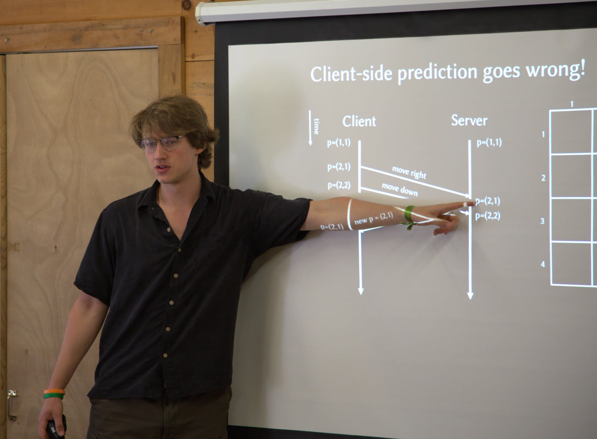

Anatoly Zavyalov
I am a computer science PhD student at Boston University in the TCS Research Group, where I am fortunate to be advised by Sofya Raskhodnikova. I am interested in differential privacy and sublinear algorithms, especially in graph and distributed settings.
Outside of academia, I love game development, piano, learning languages, and long-distance biking.
News
- June 2026: I presented our paper Local Node Differential Privacy as a poster at TPDP 2026 (Northeastern University), and as talks at FORC 2026 (Harvard University), and the Workshop on Differential Privacy and Unlearning in Machine Learning (University of Copenhagen).
- May 2026: I started a research internship at the Max Planck Institute for Security and Privacy, working with Tamalika Mukherjee.
- April 2026: I gave a talk at Columbia University on our paper Local Node Differential Privacy.
- March 2026: I gave a talk at the University of Oxford on our paper Local Node Differential Privacy.
- September 2024: I started my PhD at Boston University and received a Chair's Graduate Fellowship, worth $10,000 USD.
Selected Publications
-
Local Node Differential Privacy
With Sofya Raskhodnikova, Adam Smith, Connor Wagaman. arXiv preprint arXiv: 2602.15802, 2026. -
Transduction of Automatic Sequences and Applications
With Jeffrey Shallit. Conference on Implementation and Application of Automata, 2023. -
A graph database solution for tracking the deployment and layout of a large radio interferometer
With Adam D. Hincks, and Dhananjhay Bansal. SPIE Software and Cyberinfrastructure for Astronomy VII, 2022.

Teaching
I am deeply passionate about teaching for all levels, ranging from teaching primary and high school students, to working as a teaching assistant for university courses with hundreds of students.Teaching Assistantships
Boston University- Teaching Fellow for CS237: Probability in Computing (Fall 2025)
- Teaching Assistant for CSC363: Computational Complexity and Computability (Winter 2024)
- Lead Teaching Assistant for CSC373: Algorithm Design and Analysis (Fall 2023)
- Teaching Assistant for CSC240: Enriched Introduction to the Theory of Computation (Winter 2022)
Outreach
Every summer, I volunteer as a counselor at SigmaCamp, a non-profit STEM summer camp aimed at curious teenagers from all over the world. I am also the chair of Sigma's Problem of the Month competition, which provides an opportunity to all for continuous learning and problem-solving.Contact
Email: zavyalov AT bu DOT edu